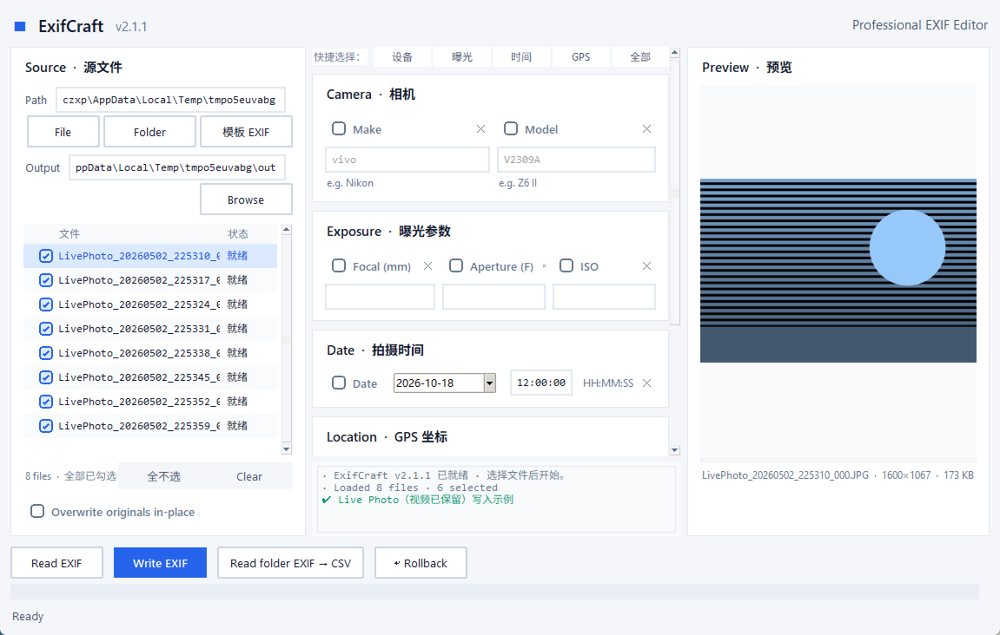

Professional EXIF Editor
干净、现代的
干净、现代的
图片元数据读写工具
纯 Python 桌面应用，基于 Tkinter。批量读写 GPS 坐标、相机信息、曝光参数与拍摄时间，支持地图选点与 CSV 导出。
快速开始
# 安装依赖
pip install -r requirements.txt
# 运行（.pyw 双击启动，无控制台窗口）
python ExifCraft.pyw
# 打包为独立可执行文件（可选）
pyinstaller --onefile --windowed --icon ExifCraft.ico ExifCraft.pyw
三步写入
1
选择图片 — File 单张 / Folder 整个文件夹
2
填写参数 — 相机、曝光、日期、GPS，可先 Read EXIF 回填
3
写入 — 默认输出 *_exif 副本，可勾选原地覆盖

📝EXIF 写入
📖EXIF 读取
⚡批量处理
📍地图选点
📊CSV 导出
🛡️安全写回
🎨现代 UI
✅输入校验
📅日期选择器